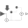
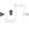
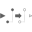

ClockOutput'output Clock' as connector |
Information
This information is part of the Modelica Standard Library maintained by the Modelica Association.
Connector with one output signal of type Clock.
Used in Components (5)
|
Modelica.Clocked.Examples.Systems.Utilities.ComponentsThrottleControl Internal combustion engine. |
|
|  |
Modelica.Clocked.ClockSignals.Sampler Sub-sample the input clock and provide it as output clock |
|  |
Modelica.Clocked.ClockSignals.Sampler Super-sample the input clock and provide it as output clock |
|  |
Modelica.Clocked.ClockSignals.Sampler Shift the input clock by a fraction of the last interval and provide it as output clock |
|
Modelica.Clocked.ClockSignals.Interfaces Icon, connector, and solver method of a block that generates a clock |